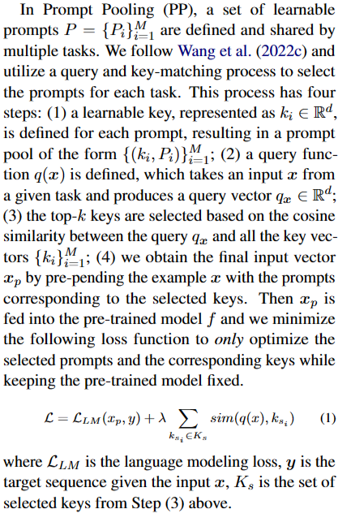
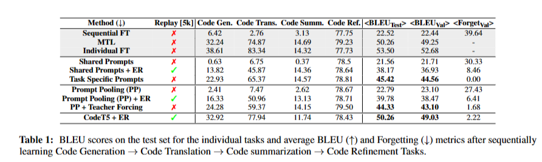
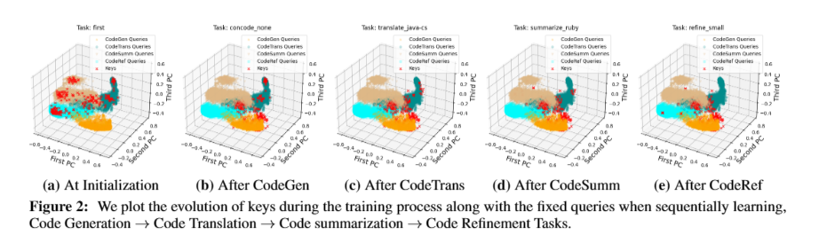

论文摘要
本文探索了代码生成模型的持续学习能力，并提出了一个名为CODETASK-CL的基准，用于评估代码生成模型在不同任务上的持续学习能力。作者发现现有的持续学习方法在代码领域中存在灾难性遗忘的问题，并提出了一种名为Prompt Pooling with Teacher Forcing (PP-TF)的方法来解决这个问题，取得了21.54%的性能提升。
背景
论文背景: 大规模代码生成模型在提高程序员生产力方面取得了显著的成果，但由于库的升级和废弃频繁发生，重新训练这些模型的计算成本很高，因此持续学习是代码领域中一个尚未充分探索的重要方面
过去方案: 以往的研究主要集中在自然语言处理和计算机视觉领域的持续学习方法，对于代码生成模型的持续学习方法尚未有深入研究。
论文的Motivation: 鉴于代码领域缺乏持续学习的基准，本文提出了一个名为CODETASK-CL的基准，涵盖了代码生成、翻译、摘要和优化等多种任务，以及不同的输入和输出编程语言。同时，作者还提出了一种用于代码模型的持续学习的训练流程，以促进进一步的持续学习方法的发展。通过在CODETASK-CL基准上的实验，作者发现现有的有效方法如Prompt Pooling在代码任务中存在灾难性遗忘的问题，通过提出的PP-TF方法，可以稳定训练并取得更好的性能。
研究方法
理论背景：CodeTask-CL Benchmark
本文介绍了一种名为CODETASK-CL的基准测试，用于探索代码生成模型中的持续学习（CL）。
包含四个任务：code genertation,code summerization,code translation,code refinement,代码生成、翻译、摘要和改进
评价指标
该文章的评估部分使用BLEU和Forget指标来评估模型的性能。BLEU是一种常用的机器翻译评估指标，它通过比较生成的翻译结果与参考翻译之间的相似度来衡量翻译质量。BLEU的取值范围为0到1，越接近1表示生成结果与参考翻译越相似。
Forget指标用于评估模型在之前学习的任务上保持性能的能力。它通过计算每个任务的最大准确率与最终准确率之间的平均差异来衡量模型的遗忘程度。Forget指标的取值范围为负无穷到正无穷，越接近0表示模型在之前学习的任务上保持性能的能力越好。
评估部分的具体内容如下：首先，作者遵循Lu等人（2021）的方法，使用BLEU指标对每个任务进行评估。然后，作者计算了学习所有任务后的平均BLEU得分。此外，作者还报告了平均Forget指标，用于评估模型在之前学习的任务上的性能保持能力。
技术路线：Prompt Pooling With Teacher Forcing
PP-TF是一种用于代码相关领域的持续学习（CL）的技术，是Prompt Pooling（PP）的扩展。PP允许重复使用先前获取的知识，并减少每个任务所需的提示数量。
PP的步骤：
- 为每个提示定义一个可学习的键，形成一个提示池。
- 定义一个查询函数，根据给定任务的输入生成查询向量。
- 基于查询向量和所有键向量之间的余弦相似度，选择前k个键。
- 将所选键对应的提示添加到输入示例之前，得到最终的输入向量。
Given an example, we first select the top-k keys based on the cosine similarity (E-Step)
train these selected keys to pull them closer to the query (M-Step).

公式 (1) 的含义是，它是一种损失函数，用于优化选择的提示和相应的键，同时保持预训练模型固定。其中，LLM 是语言建模损失，xp 是输入向量，y 是目标序列，Ks 是从步骤（3）中选择的键的集合，sim(q(x), ksi) 是查询向量 q(x) 和键向量 ksi 之间的余弦相似度。公式中的 λ 是一个权重参数
PP-TF去除了PP中使用的期望最大化（EM）过程，并将每个提示-键对分配给固定任务。在训练过程中，使用教师强制（teacher forcing）来选择分配给当前任务的前k个提示。优化损失函数以更新所选的提示和键，同时保持预训练模型固定。PP-TF通过共享提示在任务之间促进知识共享。在推理过程中，丢弃提示-键对的分配，并使用余弦相似度在整个提示池中选择前k个对。PP-TF与其他基于提示的CL方法相比表现更好，特别是与CodeT5模型和经验回放（ER）相结合时。
具体而言，PP-TF 方法在训练过程中移除了 E-Step 步骤，通过将每个 {(ki, Pi)} 对分配给固定的任务，并仅执行 M-Step 步骤来优化提示。为了促进知识共享，允许一些 {(ki, Pi)} 对在不同任务之间共享（参见图1）。在训练任务 t 时，我们使用教师强制（teacher forcing）来选择分配给该任务的前 k 个提示。因此，对于学习任务 t，我们的损失函数变为：
公式2
Kt 表示分配给任务 t 的提示用于教师强制。随着训练的进行，查询和提示会稳定地对齐，并允许通过共享提示在任务之间共享信息。在推理过程中，我们舍弃了 (key, prompt) 对的任务分配，并使用余弦相似度在整个提示池中选择前 k 个对
因此，PP-TF 方法相比于 PP 方法在训练过程中引入了教师强制机制，并通过稳定的提示选择机制实现了性能的提升。
实验
实验重点关注已知任务身份的持续学习场景。使用CodeT5模型作为学习CODETASK-CL基准测试的预训练模型。
比较了几种基线方法，包括顺序微调（Sequential Finetuning）、个体模型（Individual Models）、多任务学习（Multitask Learning）、共享提示调整（Shared Prompt Tuning，SP）、任务特定提示调整（Task Specific Prompt Tuning，TSPT）和经验回放（Experience Replay，ER）。根据各个任务在测试集上的BLEU分数以及在顺序学习代码生成、代码翻译、代码摘要和代码改进任务后的平均BLEU和遗忘度指标来评估这些方法的性能。
实验结果
结果表明，流行的prompt pooling方法在测试BLEU分数上表现出 catastrophic forgetting，而即使在使用经验回放ER的情况下，其性能仍然比其他方法差很多。相比之下，即使没有经验回放，使用（PP + TF）的性能也优于仅使用提示池（PP）和提示池加经验回放（PP + ER）的性能。此外，实验结果显示，将CodeT5模型与经验回放相结合的方法（CodeT5 + ER）在平均测试BLEU分数上表现最佳，达到了49.21%。

Training Instability of Prompt Pooling
我们发现Prompt Pooling存在训练不稳定性的问题，为了分析Prompt Pooling的训练不稳定性问题，研究人员使用了主成分分析(PCA)方法。
他们首先使用一个固定的codeT5编码器作为查询函数，将提供的示例编码为query。这些query在训练过程中保持不变，而键则使用数据进行初始化
然后，他们对查询和键进行PCA，获取前三个主成分并进行绘图。

通过观察PCA的结果，研究人员发现在训练开始之前，键均匀分布在不同任务的查询之间。然而，在完成第一个任务的训练后，大部分键移动到与该任务相关的查询附近。这表明这些键对应的提示主要用于第一个任务，并且通过该任务进行了训练。
随着引入每个后续任务，键向当前任务的查询对齐，导致匹配过程不稳定，更新的键-提示对经常与先前任务冲突，从而导致先前任务的灾难性遗忘。因此，PP-TF方法通过约束提示选择解决了Prompt Pooling的训练不稳定性问题。
Limitation
虽然我们使用了各个类别中最受欢迎的CL方法，但可能有一些方法未被纳入本研究，因为它们在自然语言处理或计算机视觉任务中效果不佳，但在代码生成中可能有效。
总结
首先，它是关于代码生成任务的连续学习（CL）的第一项研究；其次，它建立了一个支持代码生成的CL的基准和新颖的流程，以激发未来的研究工作；第三，它通过我们提出的PP-TF方法，解决了Prompt Pooling不稳定训练问题